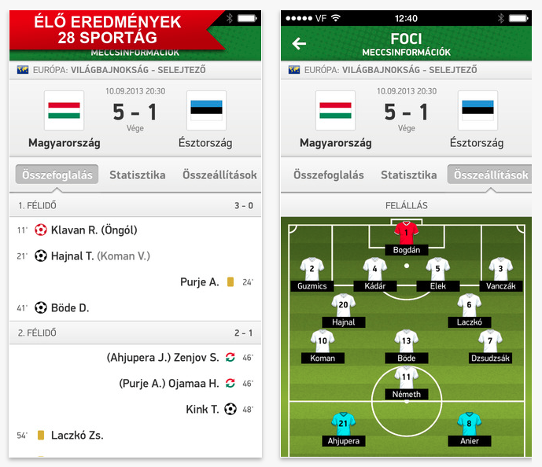
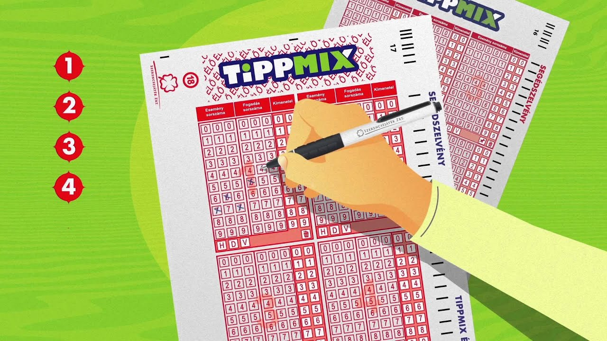
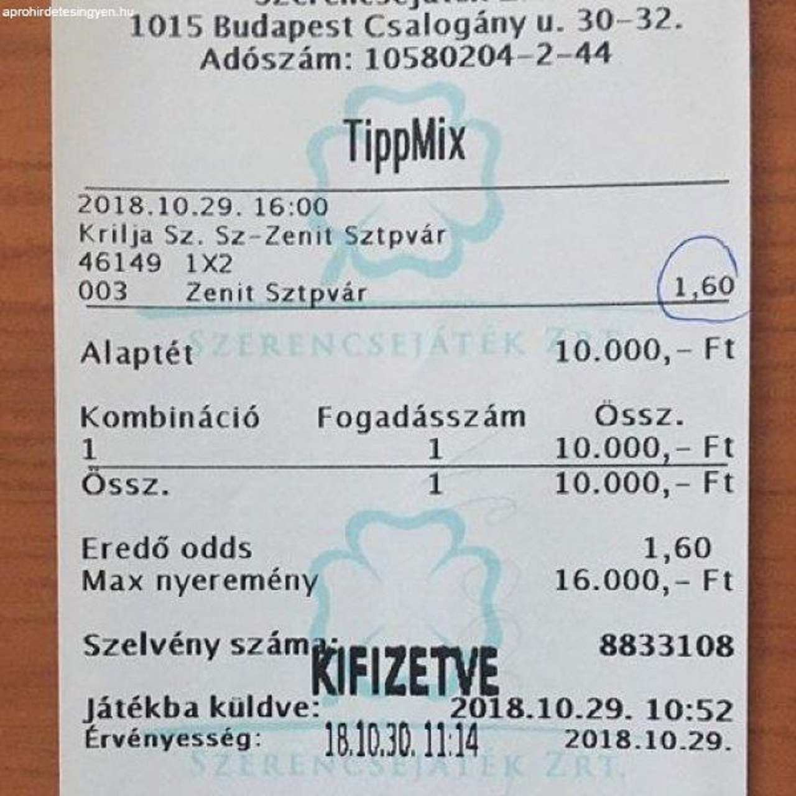

Lépések

Első lépés
A meccsek kiválasztása, statisztikák ileltve a szorzók megtekintése

Második lépés
A szelvényünk kitöltése papiron. A mai napokba már rengeteg applikáció készülta telefonokra is amelyen a szelvényt ki lehet tölkteni.

Harmadik lépés
A szelvényünket olyan formában láthatjuk ami a képen is megtekinthető